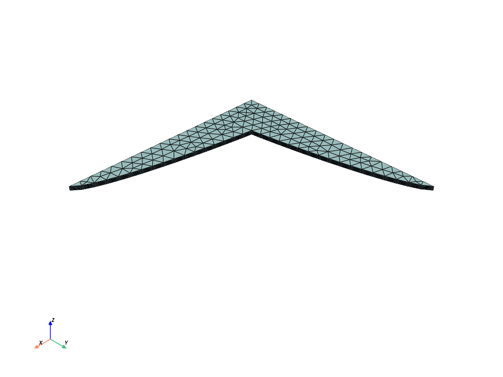
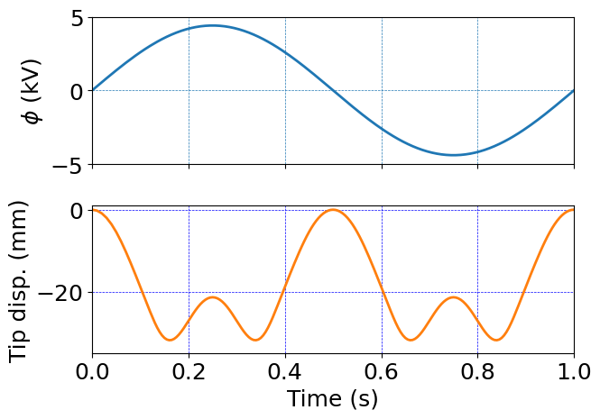

Four-arm gripper#
Code for 3D large deformation electro-elasticity with u-p formulation
Electro-elastic actuation of a four-arm gripper
Units#
Length: mm
Mass: kg
Time: s
Charge: nC
Force: mN
Stress: kPa
Electric potential: kV
Software:#
Dolfinx v0.8.0
Import modules#
# Import FEnicSx/dolfinx
import dolfinx
# For numerical arrays
import numpy as np
# For MPI-based parallelization
from mpi4py import MPI
comm = MPI.COMM_WORLD
rank = comm.Get_rank()
# PETSc solvers
from petsc4py import PETSc
# specific functions from dolfinx modules
from dolfinx import fem, mesh, io, plot, log
from dolfinx.fem import (Constant, dirichletbc, Function, functionspace, Expression )
from dolfinx.fem.petsc import NonlinearProblem
from dolfinx.nls.petsc import NewtonSolver
from dolfinx.io import VTXWriter, XDMFFile
# specific functions from ufl modules
import ufl
from ufl import (TestFunctions, TrialFunction, Identity, grad, det, div, dev, inv, tr, sqrt, conditional ,\
gt, dx, inner, derivative, dot, ln, split, exp, eq, sin, cos, acos, ge, le, outer)
# basix finite elements
import basix
from basix.ufl import element, mixed_element, quadrature_element
# Matplotlib for plotting
import matplotlib.pyplot as plt
plt.close('all')
# For timing the code
from datetime import datetime
# Set level of detail for log messages (integer)
# Guide:
# CRITICAL = 50, // errors that may lead to data corruption
# ERROR = 40, // things that HAVE gone wrong
# WARNING = 30, // things that MAY go wrong later
# INFO = 20, // information of general interest (includes solver info)
# PROGRESS = 16, // what's happening (broadly)
# TRACE = 13, // what's happening (in detail)
# DBG = 10 // sundry
#
log.set_log_level(log.LogLevel.WARNING)
Define geometry#
# Read in the 3D mesh and cell tags
with XDMFFile(MPI.COMM_WORLD,"meshes/gripper.xdmf",'r') as infile:
domain = infile.read_mesh(name="Grid",xpath="/Xdmf/Domain")
cell_tags = infile.read_meshtags(domain,name="Grid")
domain.topology.create_connectivity(domain.topology.dim, domain.topology.dim-1)
# # Also read in 2D facets for applying BCs
# with XDMFFile(MPI.COMM_WORLD,"meshes/facet_gripper.xdmf",'r') as infile:
# facet_tags = infile.read_meshtags(domain,name="Grid")
x = ufl.SpatialCoordinate(domain)
Print out the unique cell index numbers
top_imap = domain.topology.index_map(2) # index map of 2D entities in domain
values = np.zeros(top_imap.size_global) # an array of zeros of the same size as number of 2D entities
values[cell_tags.indices]=cell_tags.values # populating the array with facet tag index numbers
print(np.unique(cell_tags.values)) # printing the unique indice
[71]
# Identify the planar boundaries of the box mesh
#
def zFix(x):
return np.logical_and(np.logical_and(np.isclose(x[2], -0.5) , np.less_equal(x[0],10)) , np.less_equal(x[1], 10))
def zBot(x):
return np.isclose(x[2], -0.5)
def zMid(x):
return np.isclose(x[2], 0.0)
def zTop(x):
return np.isclose(x[2], 0.5)
def xBot(x):
return np.isclose(x[0], 0)
def yBot(x):
return np.isclose(x[1], 0)
# Mark the sub-domains
boundaries = [(1,zFix),(72,zTop),(73,zMid),(74,zBot),(75,xBot),(76,yBot)]
# build collections of facets on each subdomain and mark them appropriately.
facet_indices, facet_markers = [], [] # initalize empty collections of indices and markers.
fdim = domain.topology.dim - 1 # geometric dimension of the facet (mesh dimension - 1)
for (marker, locator) in boundaries:
facets = mesh.locate_entities(domain, fdim, locator) # an array of all the facets in a
# given subdomain ("locator")
facet_indices.append(facets) # add these facets to the collection.
facet_markers.append(np.full_like(facets, marker)) # mark them with the appropriate index.
# Format the facet indices and markers as required for use in dolfinx.
facet_indices = np.hstack(facet_indices).astype(np.int32)
facet_markers = np.hstack(facet_markers).astype(np.int32)
sorted_facets = np.argsort(facet_indices)
#
# Add these marked facets as "mesh tags" for later use in BCs.
facet_tags = mesh.meshtags(domain, fdim, facet_indices[sorted_facets], facet_markers[sorted_facets])
Print out the unique facet index numbers
top_imap = domain.topology.index_map(2) # index map of 2D entities in domain (facets)
values = np.zeros(top_imap.size_global) # an array of zeros of the same size as number of 2D entities
values[facet_tags.indices]=facet_tags.values # populating the array with facet tag index numbers
print(np.unique(facet_tags.values)) # printing the unique indices
[ 1 72 73 74 75 76]
Markers from gmsh#
Ztop - 72
Zmid - 73
Zbot - 74
Xbot - 75
Ybot - 76
Visualize reference configuration and boundary facets
import pyvista
pyvista.set_jupyter_backend('html')
from dolfinx.plot import vtk_mesh
pyvista.start_xvfb()
# initialize a plotter
plotter = pyvista.Plotter()
# Add the mesh.
topology, cell_types, geometry = plot.vtk_mesh(domain, domain.topology.dim)
grid = pyvista.UnstructuredGrid(topology, cell_types, geometry)
plotter.add_mesh(grid, show_edges=True)
labels = dict(zlabel='Z', xlabel='X', ylabel='Y')
plotter.add_axes(**labels)
plotter.screenshot("results/gripper_mesh.png")
from IPython.display import Image
Image(filename='results/gripper_mesh.png')

Un-comment this cell to see an interactive visualization of the mesh#
# plotter.show()
Define boundary and volume integration measure#
# Define the boundary integration measure "ds" using the facet tags,
# also specify the number of surface quadrature points.
ds = ufl.Measure('ds', domain=domain, subdomain_data=facet_tags, metadata={'quadrature_degree':4})
# Define the volume integration measure "dx"
# also specify the number of volume quadrature points.
dx = ufl.Measure('dx', domain=domain, metadata={'quadrature_degree': 4})
# Create facet to cell connectivity required to determine boundary facets.
domain.topology.create_connectivity(domain.topology.dim, domain.topology.dim)
domain.topology.create_connectivity(domain.topology.dim, domain.topology.dim-1)
domain.topology.create_connectivity(domain.topology.dim-1, domain.topology.dim)
# Define facet normal
n = ufl.FacetNormal(domain)
Material parameters#
# Mechanical parameters
Geq_0 = Constant(domain, 15.0) # Shear modulus, kPa
Kbulk = Constant(domain, PETSc.ScalarType(1.0e3*Geq_0)) # Bulk modulus, kPa
I_m = Constant(domain, 175.0) # Gent locking paramter
# Electrostatic parameters
vareps_0 = Constant(domain, 8.85E-3) # permittivity of free space pF/mm
vareps_r = Constant(domain, 5.0) # relative permittivity, dimensionless
vareps = vareps_r*vareps_0 # permittivity of the material
Function spaces#
U2 = element("Lagrange", domain.basix_cell(), 2, shape=(3,)) # For displacement
P1 = element("Lagrange", domain.basix_cell(), 1) # For pressure and electric potential
#
TH = mixed_element([U2, P1, P1]) # Taylor-Hood style mixed element
ME = functionspace(domain, TH) # Total space for all DOFs
#
V1 = functionspace(domain, P1) # Scalar function space.
V2 = functionspace(domain, U2) # Vector function space
#
# Define actual functions with the required DOFs
w = Function(ME)
u, p, phi = split(w) # displacement u, presssure p, and electric potential phi
# A copy of functions to store values in the previous step
w_old = Function(ME)
u_old, p_old, phi_old = split(w_old)
# Define test functions
u_test, p_test, phi_test = TestFunctions(ME)
# Define trial functions needed for automatic differentiation
dw = TrialFunction(ME)
Subroutines for kinematics and constitutive equations#
#-------------------------------------------------------------
# Utility subroutines
#-------------------------------------------------------------
# Subroutine for a "safer" sqrt() function which avoids a divide by zero
# when differentiated.
def safe_sqrt(x):
return sqrt(x + 1.0e-16)
#-------------------------------------------------------------
# Subroutines for kinematics
#-------------------------------------------------------------
# Deformation gradient
def F_calc(u):
Id = Identity(3)
F = Id + grad(u)
return F
#-------------------------------------------------------------
# Subroutines for calculating the electric field and displacement
#-------------------------------------------------------------
# Referential electric displacement
def Dmat_calc(u, phi):
F = F_calc(u)
J = det(F)
C = F.T*F
e_R = - grad(phi) # referential electric field
Dmat = vareps * J* inv(C)*e_R
return Dmat
#-------------------------------------------------------------
# Subroutines for calculating the stress
#-------------------------------------------------------------
# Generalized shear modulus for Gent model
def Geq_Gent_calc(u):
F = F_calc(u)
J = det(F)
C = F.T*F
Cdis = J**(-2/3)*C
I1 = tr(Cdis)
z = I1-3
z = conditional( gt(z, I_m), 0.95*I_m, z ) # Keep from blowing up
Geq_Gent = Geq_0 * (I_m/(I_m - z))
return Geq_Gent
# Mechanical Cauchy stress for Gent material
def T_mech_calc(u,p):
Id = Identity(3)
F = F_calc(u)
J = det(F)
B = F*F.T
Bdis = J**(-2/3)*B
Geq = Geq_Gent_calc(u)
T_mech = (1/J)* Geq * dev(Bdis) - p * Id
return T_mech
# Maxwell contribution to the Cauchy stress
def T_maxw_calc(u,phi):
F = F_calc(u)
e_R = - grad(phi) # referential electric field
e_sp = inv(F.T)*e_R # spatial electric field
# Spatial Maxwel stress
T_maxw = vareps*(outer(e_sp,e_sp) - 1/2*(inner(e_sp,e_sp))*Identity(3))
return T_maxw
# Piola stress
def T_mat_calc(u, p, phi):
Id = Identity(3)
F = F_calc(u)
J = det(F)
#
T_mech = T_mech_calc(u,p)
#
T_maxw = T_maxw_calc(u,phi)
#
T = T_mech + T_maxw
#
Tmat = J * T * inv(F.T)
return Tmat
Evaluate kinematics and constitutive relations#
# Kinematical quantities
F = F_calc(u)
J = det(F)
C = F.T*F
Fdis = J**(-1/3)*F
Cdis = J**(-2/3)*C
I1 = tr(Cdis)
# Mechanical Cauchy stress
T_mech = T_mech_calc(u, p)
# Electrostatic Cauchy stress
T_maxw =T_maxw_calc(u, phi)
# Piola stress
Piola = T_mat_calc(u, p, phi)
# Referential electric displacement
Dmat = Dmat_calc(u, phi)
Weak forms#
# The weak form for the equilibrium equation
#
Res_1 = inner( Piola, grad(u_test))*dx
# The auxiliary equation for the pressure
#
Res_2 = inner((p/Kbulk + ln(J)/J) , p_test)*dx
# The weak form for Gauss's equation
Res_3 = inner(Dmat, grad(phi_test))*dx
# The total residual
Res = Res_1 + Res_2 + Res_3
# Automatic differentiation tangent:
a = derivative(Res, w, dw)
Set-up output files#
# results file name
results_name = "gripper"
# Function space for projection of results
P1 = element("Lagrange", domain.basix_cell(), 1)
VV1 = fem.functionspace(domain, P1) # linear scalar function space
#
U1 = element("Lagrange", domain.basix_cell(), 1, shape=(3,))
VV2 = fem.functionspace(domain, U1) # linear Vector function space
#
T1 = element("Lagrange", domain.basix_cell(), 1, shape=(3,3))
VV3 = fem.functionspace(domain, T1) # linear tensor function space
# For visualization purposes, we need to re-project the stress tensor onto a linear function space before
# we write it (and its components and the von Mises stress, etc) to the VTX file.
#
# This is because the stress is a complicated "mixed" function of the (quadratic Lagrangian) displacements
# and the (quadrature representation) plastic strain tensor and scalar equivalent plastic strain.
#
# First, define a function for setting up this kind of projection problem for visualization purposes:
def setup_projection(u, V):
trial = ufl.TrialFunction(V)
test = ufl.TestFunction(V)
a = ufl.inner(trial, test)*dx
L = ufl.inner(u, test)*dx
projection_problem = dolfinx.fem.petsc.LinearProblem(a, L, [], \
petsc_options={"ksp_type": "cg", "ksp_rtol": 1e-16, "ksp_atol": 1e-16, "ksp_max_it": 1000})
return projection_problem
# Create a linear problem for projecting the stress tensor onto the linear tensor function space VV3.
#
tensor_projection_problem = setup_projection(Piola, VV3)
Piola_temp = tensor_projection_problem.solve()
# primary fields to write to output file
u_vis = Function(VV2, name="disp")
p_vis = Function(VV1, name="p")
phi_vis = Function(VV1, name="phi")
# Mises stress
T = Piola_temp*F.T/J
T0 = T - (1/3)*tr(T)*Identity(3)
Mises = sqrt((3/2)*inner(T0, T0))
Mises_vis= Function(VV1,name="Mises")
Mises_expr = Expression(Mises,VV1.element.interpolation_points())
# Cauchy stress components
T11 = Function(VV1)
T11.name = "T11"
T11_expr = Expression(T[0,0],VV1.element.interpolation_points())
T22 = Function(VV1)
T22.name = "T22"
T22_expr = Expression(T[1,1],VV1.element.interpolation_points())
T33 = Function(VV1)
T33.name = "T33"
T33_expr = Expression(T[2,2],VV1.element.interpolation_points())
# Stretch measure
I1_vis = Function(VV1)
I1_vis.name = "I1"
I1_expr = Expression(I1, VV1.element.interpolation_points())
# Volumetric deformation
J_vis = Function(VV1)
J_vis.name = "J"
J_expr = Expression(J, VV1.element.interpolation_points())
# set up the output VTX files.
file_results = VTXWriter(
MPI.COMM_WORLD,
"results/" + results_name + ".bp",
[ # put the functions here you wish to write to output
u_vis, p_vis, phi_vis, # DOF outputs
Mises_vis, T11, T22, T33, # stress outputs
I1_vis, J_vis, # Kinematical outputs
],
engine="BP4",
)
def writeResults(t):
# Update the output fields before writing to VTX.
#
u_vis.interpolate(w.sub(0))
p_vis.interpolate(w.sub(1))
phi_vis.interpolate(w.sub(2))
#
# re-project to smooth visualization of quadrature functions
# before interpolating.
Piola_temp = tensor_projection_problem.solve()
Mises_vis.interpolate(Mises_expr)
T11.interpolate(T11_expr)
T22.interpolate(T22_expr)
T33.interpolate(T33_expr)
#
I1_vis.interpolate(I1_expr)
J_vis.interpolate(J_expr)
# Finally, write output fields to VTX.
#
file_results.write(t)
Infrastructure for pulling out time history data (force, displacement, etc.)#
# # computing the reaction force using the stress field
# traction = dot(Piola_temp, n)
# Force = dot(traction, n)*ds(4)
# rxnForce = fem.form(Force)
# # infrastructure for evaluating functions at a certain point efficiently
pointForEvalPhi = np.array([0.0, 0.0, 0.5])
pointForEvalDisp = np.array([50.0, 0.0, 0.0])
bb_tree = dolfinx.geometry.bb_tree(domain,domain.topology.dim)
cell_candidates = dolfinx.geometry.compute_collisions_points(bb_tree, pointForEvalPhi)
colliding_cellsPhi = dolfinx.geometry.compute_colliding_cells(domain, cell_candidates, pointForEvalPhi).array
bb_tree = dolfinx.geometry.bb_tree(domain,domain.topology.dim)
cell_candidates = dolfinx.geometry.compute_collisions_points(bb_tree, pointForEvalDisp)
colliding_cellsDisp = dolfinx.geometry.compute_colliding_cells(domain, cell_candidates, pointForEvalDisp).array
Boundary condtions#
# Constant for applied electric potential
phi_cons = Constant(domain,PETSc.ScalarType(phiRamp(0)))
# Find the specific DOFs which will be constrained.
fix_u1_dofs = fem.locate_dofs_topological(ME.sub(0).sub(0), facet_tags.dim, facet_tags.find(1))
fix_u2_dofs = fem.locate_dofs_topological(ME.sub(0).sub(1), facet_tags.dim, facet_tags.find(1))
fix_u3_dofs = fem.locate_dofs_topological(ME.sub(0).sub(2), facet_tags.dim, facet_tags.find(1))
#
xSym_u1_dofs = fem.locate_dofs_topological(ME.sub(0).sub(0), facet_tags.dim, facet_tags.find(75))
ySym_u2_dofs = fem.locate_dofs_topological(ME.sub(0).sub(1), facet_tags.dim, facet_tags.find(76))
#
zTop_phi_dofs = fem.locate_dofs_topological(ME.sub(2), facet_tags.dim, facet_tags.find(72))
zMid_phi_dofs = fem.locate_dofs_topological(ME.sub(2), facet_tags.dim, facet_tags.find(73))
# building Dirichlet BCs
bcs_1 = dirichletbc(0.0, fix_u1_dofs, ME.sub(0).sub(0)) # u1 fix - bottom of the central region
bcs_2 = dirichletbc(0.0, fix_u2_dofs, ME.sub(0).sub(1)) # u2 fix - bottom of the central region
bcs_3 = dirichletbc(0.0, fix_u3_dofs, ME.sub(0).sub(2)) # u3 fix - bottom of the central region
#
bcs_4 = dirichletbc(0.0, xSym_u1_dofs, ME.sub(0).sub(0)) # xSym
bcs_5 = dirichletbc(0.0, ySym_u2_dofs, ME.sub(0).sub(1)) # ySym
#
bcs_6 = dirichletbc(phi_cons, zTop_phi_dofs, ME.sub(2)) # phi ramp - Top
bcs_7 = dirichletbc(0.0, zMid_phi_dofs, ME.sub(2)) # phi ground - Midplane
bcs = [bcs_1, bcs_2, bcs_3, bcs_4, bcs_5, bcs_6, bcs_7]
Define the nonlinear variational problem#
# Set up nonlinear problem
problem = NonlinearProblem(Res, w, bcs, a)
# the global newton solver and params
solver = NewtonSolver(MPI.COMM_WORLD, problem)
solver.convergence_criterion = "incremental"
solver.rtol = 1e-8
solver.atol = 1e-8
solver.max_it = 50
solver.report = True
# The Krylov solver parameters.
ksp = solver.krylov_solver
opts = PETSc.Options()
option_prefix = ksp.getOptionsPrefix()
opts[f"{option_prefix}ksp_type"] = "preonly" # "preonly" works equally well
opts[f"{option_prefix}pc_type"] = "lu" # do not use 'gamg' pre-conditioner
opts[f"{option_prefix}pc_factor_mat_solver_type"] = "mumps"
opts[f"{option_prefix}ksp_max_it"] = 30
ksp.setFromOptions()
Start calculation loop#
# Give the step a descriptive name
step = "Actuate"
# Variables for storing time history
totSteps = 1000000
timeHist0 = np.zeros(shape=[totSteps])
timeHist1 = np.zeros(shape=[totSteps])
timeHist2 = np.zeros(shape=[totSteps])
# Iinitialize a counter for reporting data
ii=0
# Write initial state to file
writeResults(t=0.0)
# print a message for simulation startup
print("------------------------------------")
print("Simulation Start")
print("------------------------------------")
# Store start time
startTime = datetime.now()
# Time-stepping solution procedure loop
while (round(t + dt, 9) <= Ttot):
# increment time
t += dt
# update time variables in time-dependent BCs
phi_cons.value = phiRamp(t)
# Solve the problem
(iter, converged) = solver.solve(w)
# Now we start the adaptive time-stepping and output storage procedure.
#
# First, we check if the newton solver actually converged.
if converged:
# If the solver converged, we print the status of the solver,
# perform adaptive time-stepping updates, output results, and
# update degrees of freedom for the next step, w_old <- w.
# increment counter
ii += 1
# Collect results from MPI ghost processes
w.x.scatter_forward()
# Print progress of calculation
if ii%1 == 0:
now = datetime.now()
current_time = now.strftime("%H:%M:%S")
print("Step: {} | Increment: {} | Iterations: {}".format(step, ii, iter))
print("dt: {} | Simulation Time: {} s | Percent of total time: {}%".format(round(dt,4), round(t,4), round(100*t/Ttot,4)))
print()
# Iteration-based adaptive time-stepping
#
# If the newton solver takes 3 or less iterations,
# increase the time step by a factor of 1.5:
if iter<=3:
dt = 1.5*dt
dk.value =dt
print("Time step increased from {} to {}".format(round(dt/1.5,4),round(dt,4)))
print()
# If the newton solver takes 9 or more iterations,
# decrease the time step by a factor of 2:
elif iter>=9:
dt = dt/2
dk.value = dt
print("Time step decreased from {} to {}".format(round(2.0*dt,4),round(dt,4)))
print()
# otherwise the newton solver took 4-8 iterations,
# in which case leave the time step alone.
# Write output to file
writeResults(t)
# Store time history variables at this time
timeHist0[ii] = t # current time
timeHist1[ii] = w.sub(2).eval([0, 0, 0.5],colliding_cellsPhi[0])[0] # time history of voltage phi at a point
timeHist2[ii] = w.sub(0).sub(2).eval([50, 0, 0],colliding_cellsDisp[0])[0] # time history of displacement at a point
# Update DOFs for next step
w_old.x.array[:] = w.x.array
# If solver doesn't converge we have to back up in time,
# cut the size of the time step, and try solving again.
else: # not(converged)
# inform the user about the nonconvergence
now = datetime.now()
current_time = now.strftime("%H:%M:%S")
print("Not converged, trying again")
print("Step: {} | Increment: {} | Iterations: {}".format(step, ii, iter))
print("dt: {} | Simulation Time: {} s | Percent of total time: {}%".format(round(dt,4), round(t,4), round(100*t/Ttot,4)))
print("old dt: {} | new dt {}".format(round(dt,4), round(dt/2.0,4)))
print()
# first, we back up in time
# ( to un-do the current time step )
t = t - float(dk)
# Then, we cut back on the time step we're attempting.
# (by a factor of 2)
dt = dt/2.0
dk.value = dt
# Finally, we have to reset the degrees of freedom to their
# "old" values before trying to solve again, otherwise the
# initial guess for w is retained from the "failed" solve attempt.
w.x.array = w_old.x.array[:]
# close the output file.
file_results.close()
# End analysis
print("-----------------------------------------")
print("End computation")
# Report elapsed real time for the analysis
endTime = datetime.now()
elapseTime = endTime - startTime
print("------------------------------------------")
print("Elapsed real time: {}".format(elapseTime))
print("------------------------------------------")
------------------------------------
Simulation Start
------------------------------------
Step: Actuate | Increment: 1 | Iterations: 5
dt: 0.01 | Simulation Time: 0.01 s | Percent of total time: 1.0%
Step: Actuate | Increment: 2 | Iterations: 6
dt: 0.01 | Simulation Time: 0.02 s | Percent of total time: 2.0%
Step: Actuate | Increment: 3 | Iterations: 6
dt: 0.01 | Simulation Time: 0.03 s | Percent of total time: 3.0%
Step: Actuate | Increment: 4 | Iterations: 6
dt: 0.01 | Simulation Time: 0.04 s | Percent of total time: 4.0%
Step: Actuate | Increment: 5 | Iterations: 6
dt: 0.01 | Simulation Time: 0.05 s | Percent of total time: 5.0%
Step: Actuate | Increment: 6 | Iterations: 6
dt: 0.01 | Simulation Time: 0.06 s | Percent of total time: 6.0%
Step: Actuate | Increment: 7 | Iterations: 6
dt: 0.01 | Simulation Time: 0.07 s | Percent of total time: 7.0%
Step: Actuate | Increment: 8 | Iterations: 7
dt: 0.01 | Simulation Time: 0.08 s | Percent of total time: 8.0%
Step: Actuate | Increment: 9 | Iterations: 7
dt: 0.01 | Simulation Time: 0.09 s | Percent of total time: 9.0%
Step: Actuate | Increment: 10 | Iterations: 7
dt: 0.01 | Simulation Time: 0.1 s | Percent of total time: 10.0%
Step: Actuate | Increment: 11 | Iterations: 8
dt: 0.01 | Simulation Time: 0.11 s | Percent of total time: 11.0%
Step: Actuate | Increment: 12 | Iterations: 8
dt: 0.01 | Simulation Time: 0.12 s | Percent of total time: 12.0%
Step: Actuate | Increment: 13 | Iterations: 9
dt: 0.01 | Simulation Time: 0.13 s | Percent of total time: 13.0%
Time step decreased from 0.01 to 0.005
Step: Actuate | Increment: 14 | Iterations: 6
dt: 0.005 | Simulation Time: 0.135 s | Percent of total time: 13.5%
Step: Actuate | Increment: 15 | Iterations: 6
dt: 0.005 | Simulation Time: 0.14 s | Percent of total time: 14.0%
Step: Actuate | Increment: 16 | Iterations: 6
dt: 0.005 | Simulation Time: 0.145 s | Percent of total time: 14.5%
Step: Actuate | Increment: 17 | Iterations: 6
dt: 0.005 | Simulation Time: 0.15 s | Percent of total time: 15.0%
Step: Actuate | Increment: 18 | Iterations: 6
dt: 0.005 | Simulation Time: 0.155 s | Percent of total time: 15.5%
Step: Actuate | Increment: 19 | Iterations: 6
dt: 0.005 | Simulation Time: 0.16 s | Percent of total time: 16.0%
Step: Actuate | Increment: 20 | Iterations: 6
dt: 0.005 | Simulation Time: 0.165 s | Percent of total time: 16.5%
Step: Actuate | Increment: 21 | Iterations: 6
dt: 0.005 | Simulation Time: 0.17 s | Percent of total time: 17.0%
Step: Actuate | Increment: 22 | Iterations: 6
dt: 0.005 | Simulation Time: 0.175 s | Percent of total time: 17.5%
Step: Actuate | Increment: 23 | Iterations: 6
dt: 0.005 | Simulation Time: 0.18 s | Percent of total time: 18.0%
Step: Actuate | Increment: 24 | Iterations: 6
dt: 0.005 | Simulation Time: 0.185 s | Percent of total time: 18.5%
Step: Actuate | Increment: 25 | Iterations: 6
dt: 0.005 | Simulation Time: 0.19 s | Percent of total time: 19.0%
Step: Actuate | Increment: 26 | Iterations: 6
dt: 0.005 | Simulation Time: 0.195 s | Percent of total time: 19.5%
Step: Actuate | Increment: 27 | Iterations: 6
dt: 0.005 | Simulation Time: 0.2 s | Percent of total time: 20.0%
Step: Actuate | Increment: 28 | Iterations: 6
dt: 0.005 | Simulation Time: 0.205 s | Percent of total time: 20.5%
Step: Actuate | Increment: 29 | Iterations: 6
dt: 0.005 | Simulation Time: 0.21 s | Percent of total time: 21.0%
Step: Actuate | Increment: 30 | Iterations: 6
dt: 0.005 | Simulation Time: 0.215 s | Percent of total time: 21.5%
Step: Actuate | Increment: 31 | Iterations: 5
dt: 0.005 | Simulation Time: 0.22 s | Percent of total time: 22.0%
Step: Actuate | Increment: 32 | Iterations: 5
dt: 0.005 | Simulation Time: 0.225 s | Percent of total time: 22.5%
Step: Actuate | Increment: 33 | Iterations: 5
dt: 0.005 | Simulation Time: 0.23 s | Percent of total time: 23.0%
Step: Actuate | Increment: 34 | Iterations: 5
dt: 0.005 | Simulation Time: 0.235 s | Percent of total time: 23.5%
Step: Actuate | Increment: 35 | Iterations: 5
dt: 0.005 | Simulation Time: 0.24 s | Percent of total time: 24.0%
Step: Actuate | Increment: 36 | Iterations: 4
dt: 0.005 | Simulation Time: 0.245 s | Percent of total time: 24.5%
Step: Actuate | Increment: 37 | Iterations: 4
dt: 0.005 | Simulation Time: 0.25 s | Percent of total time: 25.0%
Step: Actuate | Increment: 38 | Iterations: 4
dt: 0.005 | Simulation Time: 0.255 s | Percent of total time: 25.5%
Step: Actuate | Increment: 39 | Iterations: 4
dt: 0.005 | Simulation Time: 0.26 s | Percent of total time: 26.0%
Step: Actuate | Increment: 40 | Iterations: 5
dt: 0.005 | Simulation Time: 0.265 s | Percent of total time: 26.5%
Step: Actuate | Increment: 41 | Iterations: 5
dt: 0.005 | Simulation Time: 0.27 s | Percent of total time: 27.0%
Step: Actuate | Increment: 42 | Iterations: 5
dt: 0.005 | Simulation Time: 0.275 s | Percent of total time: 27.5%
Step: Actuate | Increment: 43 | Iterations: 5
dt: 0.005 | Simulation Time: 0.28 s | Percent of total time: 28.0%
Step: Actuate | Increment: 44 | Iterations: 5
dt: 0.005 | Simulation Time: 0.285 s | Percent of total time: 28.5%
Step: Actuate | Increment: 45 | Iterations: 5
dt: 0.005 | Simulation Time: 0.29 s | Percent of total time: 29.0%
Step: Actuate | Increment: 46 | Iterations: 6
dt: 0.005 | Simulation Time: 0.295 s | Percent of total time: 29.5%
Step: Actuate | Increment: 47 | Iterations: 6
dt: 0.005 | Simulation Time: 0.3 s | Percent of total time: 30.0%
Step: Actuate | Increment: 48 | Iterations: 6
dt: 0.005 | Simulation Time: 0.305 s | Percent of total time: 30.5%
Step: Actuate | Increment: 49 | Iterations: 6
dt: 0.005 | Simulation Time: 0.31 s | Percent of total time: 31.0%
Step: Actuate | Increment: 50 | Iterations: 6
dt: 0.005 | Simulation Time: 0.315 s | Percent of total time: 31.5%
Step: Actuate | Increment: 51 | Iterations: 6
dt: 0.005 | Simulation Time: 0.32 s | Percent of total time: 32.0%
Step: Actuate | Increment: 52 | Iterations: 6
dt: 0.005 | Simulation Time: 0.325 s | Percent of total time: 32.5%
Step: Actuate | Increment: 53 | Iterations: 6
dt: 0.005 | Simulation Time: 0.33 s | Percent of total time: 33.0%
Step: Actuate | Increment: 54 | Iterations: 6
dt: 0.005 | Simulation Time: 0.335 s | Percent of total time: 33.5%
Step: Actuate | Increment: 55 | Iterations: 6
dt: 0.005 | Simulation Time: 0.34 s | Percent of total time: 34.0%
Step: Actuate | Increment: 56 | Iterations: 6
dt: 0.005 | Simulation Time: 0.345 s | Percent of total time: 34.5%
Step: Actuate | Increment: 57 | Iterations: 6
dt: 0.005 | Simulation Time: 0.35 s | Percent of total time: 35.0%
Step: Actuate | Increment: 58 | Iterations: 6
dt: 0.005 | Simulation Time: 0.355 s | Percent of total time: 35.5%
Step: Actuate | Increment: 59 | Iterations: 6
dt: 0.005 | Simulation Time: 0.36 s | Percent of total time: 36.0%
Step: Actuate | Increment: 60 | Iterations: 6
dt: 0.005 | Simulation Time: 0.365 s | Percent of total time: 36.5%
Step: Actuate | Increment: 61 | Iterations: 6
dt: 0.005 | Simulation Time: 0.37 s | Percent of total time: 37.0%
Step: Actuate | Increment: 62 | Iterations: 6
dt: 0.005 | Simulation Time: 0.375 s | Percent of total time: 37.5%
Step: Actuate | Increment: 63 | Iterations: 6
dt: 0.005 | Simulation Time: 0.38 s | Percent of total time: 38.0%
Step: Actuate | Increment: 64 | Iterations: 6
dt: 0.005 | Simulation Time: 0.385 s | Percent of total time: 38.5%
Step: Actuate | Increment: 65 | Iterations: 6
dt: 0.005 | Simulation Time: 0.39 s | Percent of total time: 39.0%
Step: Actuate | Increment: 66 | Iterations: 6
dt: 0.005 | Simulation Time: 0.395 s | Percent of total time: 39.5%
Step: Actuate | Increment: 67 | Iterations: 6
dt: 0.005 | Simulation Time: 0.4 s | Percent of total time: 40.0%
Step: Actuate | Increment: 68 | Iterations: 6
dt: 0.005 | Simulation Time: 0.405 s | Percent of total time: 40.5%
Step: Actuate | Increment: 69 | Iterations: 6
dt: 0.005 | Simulation Time: 0.41 s | Percent of total time: 41.0%
Step: Actuate | Increment: 70 | Iterations: 6
dt: 0.005 | Simulation Time: 0.415 s | Percent of total time: 41.5%
Step: Actuate | Increment: 71 | Iterations: 6
dt: 0.005 | Simulation Time: 0.42 s | Percent of total time: 42.0%
Step: Actuate | Increment: 72 | Iterations: 6
dt: 0.005 | Simulation Time: 0.425 s | Percent of total time: 42.5%
Step: Actuate | Increment: 73 | Iterations: 6
dt: 0.005 | Simulation Time: 0.43 s | Percent of total time: 43.0%
Step: Actuate | Increment: 74 | Iterations: 6
dt: 0.005 | Simulation Time: 0.435 s | Percent of total time: 43.5%
Step: Actuate | Increment: 75 | Iterations: 6
dt: 0.005 | Simulation Time: 0.44 s | Percent of total time: 44.0%
Step: Actuate | Increment: 76 | Iterations: 6
dt: 0.005 | Simulation Time: 0.445 s | Percent of total time: 44.5%
Step: Actuate | Increment: 77 | Iterations: 6
dt: 0.005 | Simulation Time: 0.45 s | Percent of total time: 45.0%
Step: Actuate | Increment: 78 | Iterations: 6
dt: 0.005 | Simulation Time: 0.455 s | Percent of total time: 45.5%
Step: Actuate | Increment: 79 | Iterations: 5
dt: 0.005 | Simulation Time: 0.46 s | Percent of total time: 46.0%
Step: Actuate | Increment: 80 | Iterations: 5
dt: 0.005 | Simulation Time: 0.465 s | Percent of total time: 46.5%
Step: Actuate | Increment: 81 | Iterations: 5
dt: 0.005 | Simulation Time: 0.47 s | Percent of total time: 47.0%
Step: Actuate | Increment: 82 | Iterations: 5
dt: 0.005 | Simulation Time: 0.475 s | Percent of total time: 47.5%
Step: Actuate | Increment: 83 | Iterations: 5
dt: 0.005 | Simulation Time: 0.48 s | Percent of total time: 48.0%
Step: Actuate | Increment: 84 | Iterations: 5
dt: 0.005 | Simulation Time: 0.485 s | Percent of total time: 48.5%
Step: Actuate | Increment: 85 | Iterations: 5
dt: 0.005 | Simulation Time: 0.49 s | Percent of total time: 49.0%
Step: Actuate | Increment: 86 | Iterations: 5
dt: 0.005 | Simulation Time: 0.495 s | Percent of total time: 49.5%
Step: Actuate | Increment: 87 | Iterations: 5
dt: 0.005 | Simulation Time: 0.5 s | Percent of total time: 50.0%
Step: Actuate | Increment: 88 | Iterations: 5
dt: 0.005 | Simulation Time: 0.505 s | Percent of total time: 50.5%
Step: Actuate | Increment: 89 | Iterations: 5
dt: 0.005 | Simulation Time: 0.51 s | Percent of total time: 51.0%
Step: Actuate | Increment: 90 | Iterations: 5
dt: 0.005 | Simulation Time: 0.515 s | Percent of total time: 51.5%
Step: Actuate | Increment: 91 | Iterations: 5
dt: 0.005 | Simulation Time: 0.52 s | Percent of total time: 52.0%
Step: Actuate | Increment: 92 | Iterations: 5
dt: 0.005 | Simulation Time: 0.525 s | Percent of total time: 52.5%
Step: Actuate | Increment: 93 | Iterations: 5
dt: 0.005 | Simulation Time: 0.53 s | Percent of total time: 53.0%
Step: Actuate | Increment: 94 | Iterations: 5
dt: 0.005 | Simulation Time: 0.535 s | Percent of total time: 53.5%
Step: Actuate | Increment: 95 | Iterations: 5
dt: 0.005 | Simulation Time: 0.54 s | Percent of total time: 54.0%
Step: Actuate | Increment: 96 | Iterations: 5
dt: 0.005 | Simulation Time: 0.545 s | Percent of total time: 54.5%
Step: Actuate | Increment: 97 | Iterations: 5
dt: 0.005 | Simulation Time: 0.55 s | Percent of total time: 55.0%
Step: Actuate | Increment: 98 | Iterations: 6
dt: 0.005 | Simulation Time: 0.555 s | Percent of total time: 55.5%
Step: Actuate | Increment: 99 | Iterations: 6
dt: 0.005 | Simulation Time: 0.56 s | Percent of total time: 56.0%
Step: Actuate | Increment: 100 | Iterations: 6
dt: 0.005 | Simulation Time: 0.565 s | Percent of total time: 56.5%
Step: Actuate | Increment: 101 | Iterations: 6
dt: 0.005 | Simulation Time: 0.57 s | Percent of total time: 57.0%
Step: Actuate | Increment: 102 | Iterations: 6
dt: 0.005 | Simulation Time: 0.575 s | Percent of total time: 57.5%
Step: Actuate | Increment: 103 | Iterations: 6
dt: 0.005 | Simulation Time: 0.58 s | Percent of total time: 58.0%
Step: Actuate | Increment: 104 | Iterations: 6
dt: 0.005 | Simulation Time: 0.585 s | Percent of total time: 58.5%
Step: Actuate | Increment: 105 | Iterations: 6
dt: 0.005 | Simulation Time: 0.59 s | Percent of total time: 59.0%
Step: Actuate | Increment: 106 | Iterations: 6
dt: 0.005 | Simulation Time: 0.595 s | Percent of total time: 59.5%
Step: Actuate | Increment: 107 | Iterations: 6
dt: 0.005 | Simulation Time: 0.6 s | Percent of total time: 60.0%
Step: Actuate | Increment: 108 | Iterations: 6
dt: 0.005 | Simulation Time: 0.605 s | Percent of total time: 60.5%
Step: Actuate | Increment: 109 | Iterations: 6
dt: 0.005 | Simulation Time: 0.61 s | Percent of total time: 61.0%
Step: Actuate | Increment: 110 | Iterations: 6
dt: 0.005 | Simulation Time: 0.615 s | Percent of total time: 61.5%
Step: Actuate | Increment: 111 | Iterations: 6
dt: 0.005 | Simulation Time: 0.62 s | Percent of total time: 62.0%
Step: Actuate | Increment: 112 | Iterations: 6
dt: 0.005 | Simulation Time: 0.625 s | Percent of total time: 62.5%
Step: Actuate | Increment: 113 | Iterations: 6
dt: 0.005 | Simulation Time: 0.63 s | Percent of total time: 63.0%
Step: Actuate | Increment: 114 | Iterations: 6
dt: 0.005 | Simulation Time: 0.635 s | Percent of total time: 63.5%
Step: Actuate | Increment: 115 | Iterations: 6
dt: 0.005 | Simulation Time: 0.64 s | Percent of total time: 64.0%
Step: Actuate | Increment: 116 | Iterations: 6
dt: 0.005 | Simulation Time: 0.645 s | Percent of total time: 64.5%
Step: Actuate | Increment: 117 | Iterations: 6
dt: 0.005 | Simulation Time: 0.65 s | Percent of total time: 65.0%
Step: Actuate | Increment: 118 | Iterations: 6
dt: 0.005 | Simulation Time: 0.655 s | Percent of total time: 65.5%
Step: Actuate | Increment: 119 | Iterations: 6
dt: 0.005 | Simulation Time: 0.66 s | Percent of total time: 66.0%
Step: Actuate | Increment: 120 | Iterations: 6
dt: 0.005 | Simulation Time: 0.665 s | Percent of total time: 66.5%
Step: Actuate | Increment: 121 | Iterations: 6
dt: 0.005 | Simulation Time: 0.67 s | Percent of total time: 67.0%
Step: Actuate | Increment: 122 | Iterations: 6
dt: 0.005 | Simulation Time: 0.675 s | Percent of total time: 67.5%
Step: Actuate | Increment: 123 | Iterations: 6
dt: 0.005 | Simulation Time: 0.68 s | Percent of total time: 68.0%
Step: Actuate | Increment: 124 | Iterations: 6
dt: 0.005 | Simulation Time: 0.685 s | Percent of total time: 68.5%
Step: Actuate | Increment: 125 | Iterations: 6
dt: 0.005 | Simulation Time: 0.69 s | Percent of total time: 69.0%
Step: Actuate | Increment: 126 | Iterations: 6
dt: 0.005 | Simulation Time: 0.695 s | Percent of total time: 69.5%
Step: Actuate | Increment: 127 | Iterations: 6
dt: 0.005 | Simulation Time: 0.7 s | Percent of total time: 70.0%
Step: Actuate | Increment: 128 | Iterations: 6
dt: 0.005 | Simulation Time: 0.705 s | Percent of total time: 70.5%
Step: Actuate | Increment: 129 | Iterations: 6
dt: 0.005 | Simulation Time: 0.71 s | Percent of total time: 71.0%
Step: Actuate | Increment: 130 | Iterations: 6
dt: 0.005 | Simulation Time: 0.715 s | Percent of total time: 71.5%
Step: Actuate | Increment: 131 | Iterations: 5
dt: 0.005 | Simulation Time: 0.72 s | Percent of total time: 72.0%
Step: Actuate | Increment: 132 | Iterations: 5
dt: 0.005 | Simulation Time: 0.725 s | Percent of total time: 72.5%
Step: Actuate | Increment: 133 | Iterations: 5
dt: 0.005 | Simulation Time: 0.73 s | Percent of total time: 73.0%
Step: Actuate | Increment: 134 | Iterations: 5
dt: 0.005 | Simulation Time: 0.735 s | Percent of total time: 73.5%
Step: Actuate | Increment: 135 | Iterations: 5
dt: 0.005 | Simulation Time: 0.74 s | Percent of total time: 74.0%
Step: Actuate | Increment: 136 | Iterations: 4
dt: 0.005 | Simulation Time: 0.745 s | Percent of total time: 74.5%
Step: Actuate | Increment: 137 | Iterations: 4
dt: 0.005 | Simulation Time: 0.75 s | Percent of total time: 75.0%
Step: Actuate | Increment: 138 | Iterations: 4
dt: 0.005 | Simulation Time: 0.755 s | Percent of total time: 75.5%
Step: Actuate | Increment: 139 | Iterations: 4
dt: 0.005 | Simulation Time: 0.76 s | Percent of total time: 76.0%
Step: Actuate | Increment: 140 | Iterations: 5
dt: 0.005 | Simulation Time: 0.765 s | Percent of total time: 76.5%
Step: Actuate | Increment: 141 | Iterations: 5
dt: 0.005 | Simulation Time: 0.77 s | Percent of total time: 77.0%
Step: Actuate | Increment: 142 | Iterations: 5
dt: 0.005 | Simulation Time: 0.775 s | Percent of total time: 77.5%
Step: Actuate | Increment: 143 | Iterations: 5
dt: 0.005 | Simulation Time: 0.78 s | Percent of total time: 78.0%
Step: Actuate | Increment: 144 | Iterations: 5
dt: 0.005 | Simulation Time: 0.785 s | Percent of total time: 78.5%
Step: Actuate | Increment: 145 | Iterations: 5
dt: 0.005 | Simulation Time: 0.79 s | Percent of total time: 79.0%
Step: Actuate | Increment: 146 | Iterations: 6
dt: 0.005 | Simulation Time: 0.795 s | Percent of total time: 79.5%
Step: Actuate | Increment: 147 | Iterations: 6
dt: 0.005 | Simulation Time: 0.8 s | Percent of total time: 80.0%
Step: Actuate | Increment: 148 | Iterations: 6
dt: 0.005 | Simulation Time: 0.805 s | Percent of total time: 80.5%
Step: Actuate | Increment: 149 | Iterations: 6
dt: 0.005 | Simulation Time: 0.81 s | Percent of total time: 81.0%
Step: Actuate | Increment: 150 | Iterations: 6
dt: 0.005 | Simulation Time: 0.815 s | Percent of total time: 81.5%
Step: Actuate | Increment: 151 | Iterations: 6
dt: 0.005 | Simulation Time: 0.82 s | Percent of total time: 82.0%
Step: Actuate | Increment: 152 | Iterations: 6
dt: 0.005 | Simulation Time: 0.825 s | Percent of total time: 82.5%
Step: Actuate | Increment: 153 | Iterations: 6
dt: 0.005 | Simulation Time: 0.83 s | Percent of total time: 83.0%
Step: Actuate | Increment: 154 | Iterations: 6
dt: 0.005 | Simulation Time: 0.835 s | Percent of total time: 83.5%
Step: Actuate | Increment: 155 | Iterations: 6
dt: 0.005 | Simulation Time: 0.84 s | Percent of total time: 84.0%
Step: Actuate | Increment: 156 | Iterations: 6
dt: 0.005 | Simulation Time: 0.845 s | Percent of total time: 84.5%
Step: Actuate | Increment: 157 | Iterations: 6
dt: 0.005 | Simulation Time: 0.85 s | Percent of total time: 85.0%
Step: Actuate | Increment: 158 | Iterations: 6
dt: 0.005 | Simulation Time: 0.855 s | Percent of total time: 85.5%
Step: Actuate | Increment: 159 | Iterations: 6
dt: 0.005 | Simulation Time: 0.86 s | Percent of total time: 86.0%
Step: Actuate | Increment: 160 | Iterations: 6
dt: 0.005 | Simulation Time: 0.865 s | Percent of total time: 86.5%
Step: Actuate | Increment: 161 | Iterations: 6
dt: 0.005 | Simulation Time: 0.87 s | Percent of total time: 87.0%
Step: Actuate | Increment: 162 | Iterations: 6
dt: 0.005 | Simulation Time: 0.875 s | Percent of total time: 87.5%
Step: Actuate | Increment: 163 | Iterations: 6
dt: 0.005 | Simulation Time: 0.88 s | Percent of total time: 88.0%
Step: Actuate | Increment: 164 | Iterations: 6
dt: 0.005 | Simulation Time: 0.885 s | Percent of total time: 88.5%
Step: Actuate | Increment: 165 | Iterations: 6
dt: 0.005 | Simulation Time: 0.89 s | Percent of total time: 89.0%
Step: Actuate | Increment: 166 | Iterations: 6
dt: 0.005 | Simulation Time: 0.895 s | Percent of total time: 89.5%
Step: Actuate | Increment: 167 | Iterations: 6
dt: 0.005 | Simulation Time: 0.9 s | Percent of total time: 90.0%
Step: Actuate | Increment: 168 | Iterations: 6
dt: 0.005 | Simulation Time: 0.905 s | Percent of total time: 90.5%
Step: Actuate | Increment: 169 | Iterations: 6
dt: 0.005 | Simulation Time: 0.91 s | Percent of total time: 91.0%
Step: Actuate | Increment: 170 | Iterations: 6
dt: 0.005 | Simulation Time: 0.915 s | Percent of total time: 91.5%
Step: Actuate | Increment: 171 | Iterations: 6
dt: 0.005 | Simulation Time: 0.92 s | Percent of total time: 92.0%
Step: Actuate | Increment: 172 | Iterations: 6
dt: 0.005 | Simulation Time: 0.925 s | Percent of total time: 92.5%
Step: Actuate | Increment: 173 | Iterations: 6
dt: 0.005 | Simulation Time: 0.93 s | Percent of total time: 93.0%
Step: Actuate | Increment: 174 | Iterations: 6
dt: 0.005 | Simulation Time: 0.935 s | Percent of total time: 93.5%
Step: Actuate | Increment: 175 | Iterations: 6
dt: 0.005 | Simulation Time: 0.94 s | Percent of total time: 94.0%
Step: Actuate | Increment: 176 | Iterations: 6
dt: 0.005 | Simulation Time: 0.945 s | Percent of total time: 94.5%
Step: Actuate | Increment: 177 | Iterations: 6
dt: 0.005 | Simulation Time: 0.95 s | Percent of total time: 95.0%
Step: Actuate | Increment: 178 | Iterations: 6
dt: 0.005 | Simulation Time: 0.955 s | Percent of total time: 95.5%
Step: Actuate | Increment: 179 | Iterations: 5
dt: 0.005 | Simulation Time: 0.96 s | Percent of total time: 96.0%
Step: Actuate | Increment: 180 | Iterations: 5
dt: 0.005 | Simulation Time: 0.965 s | Percent of total time: 96.5%
Step: Actuate | Increment: 181 | Iterations: 5
dt: 0.005 | Simulation Time: 0.97 s | Percent of total time: 97.0%
Step: Actuate | Increment: 182 | Iterations: 5
dt: 0.005 | Simulation Time: 0.975 s | Percent of total time: 97.5%
Step: Actuate | Increment: 183 | Iterations: 5
dt: 0.005 | Simulation Time: 0.98 s | Percent of total time: 98.0%
Step: Actuate | Increment: 184 | Iterations: 5
dt: 0.005 | Simulation Time: 0.985 s | Percent of total time: 98.5%
Step: Actuate | Increment: 185 | Iterations: 5
dt: 0.005 | Simulation Time: 0.99 s | Percent of total time: 99.0%
Step: Actuate | Increment: 186 | Iterations: 5
dt: 0.005 | Simulation Time: 0.995 s | Percent of total time: 99.5%
Step: Actuate | Increment: 187 | Iterations: 5
dt: 0.005 | Simulation Time: 1.0 s | Percent of total time: 100.0%
-----------------------------------------
End computation
------------------------------------------
Elapsed real time: 0:08:34.104952
------------------------------------------
Plot results#
# set plot font to size 18
font = {'size' : 18}
plt.rc('font', **font)
# Only plot as far as we have history data
ind = np.argmax(timeHist0) +1
# Get array of default plot colors
prop_cycle = plt.rcParams['axes.prop_cycle']
colors = prop_cycle.by_key()['color']
#------------------------------------------------------------------------------
# multi-plot figure
fig, (ax1, ax2) = plt.subplots(2,1, sharex='col')
#---------------- Voltage vs time plot
Volts = timeHist1
ax1.set_ylabel(r'$\phi$ (kV)')
ax1.set_ylim(-5, 5)
ax1.grid(linestyle="--", linewidth=0.5, color=colors[0])
#
ax1.plot(timeHist0[0:ind],Volts[0:ind], color=colors[0], linewidth=2.0)
#---------------- Tip displacement versus time plot
Displacement = timeHist2
ax2.set_ylabel(r'Tip disp. (mm)')
ax2.set_ylim(-35, 1.0)
ax2.grid(linestyle="--", linewidth=0.5, color='b')
#
ax2.plot(timeHist0[0:ind], Displacement[0:ind], color=colors[1], linewidth=2.0)
ax2.set_xlim(0, 1)
ax2.set_xlabel(r"Time (s)")
# from matplotlib.ticker import AutoMinorLocator,FormatStrFormatter
# ax2.xaxis.set_minor_locator(AutoMinorLocator())
# ax2.yaxis.set_minor_locator(AutoMinorLocator())
# plt.show()
# save figure to file
fig = plt.gcf()
fig.set_size_inches(7, 5)
plt.tight_layout()
plt.savefig("results/gripper_results.png", dpi=600)
